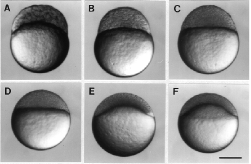

Modified from:
Kimmel et al., 1955.
Developmental Dynamics 203:253-310. Copyright © 1995 Wiley-Liss, Inc.
Reprinted only by permission of Wiley-Liss, a subsidiary of John Wiley &
Sons, Inc.
Fig. 8. Face views of embryos during the blastula period. A: 256-cell stage (2.5 h). B: high stage (3.3 h). C. transition between the high and oblong stages (3.5 h). D. transition between the oblong and sphere stages (3.8 h). E: dome stage (4.3 h). F. 30%-epiboly stage (4.7 h). Scale bar: 250 µm.

Figure 8